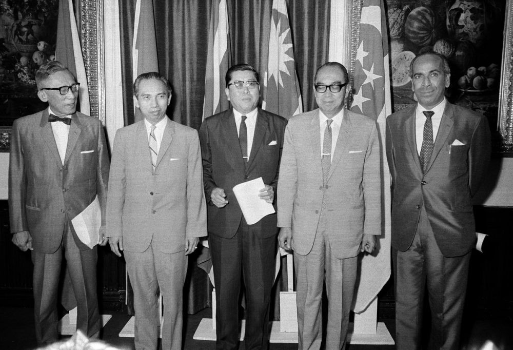

Masa Orde Baru dan Reformasi
A. Masa Orde Baru
1) Penumpasan G 30 S/PKI
Operasi penumpasan G 30 S/PKI mulai dilancarkan pada 1 Oktober 1965. Mayjen Soeharto yang menjabat Panglima Komando Strategis Angkatan Darat segera mengambil alih Komando Angkatan Darat karena belum ada kepastian tentang nasib Letjen Ahmad Yani yang menduduki Menteri Panglima Angkatan Darat. Kolonel Sarwo Edhie WIbowo sebagai Komandan Resimen Para Komando Angkatan Darat berusaha menghimpun pasukan lain termasuk Divisi Siliwangi dan Kavaleri.
Operasi penumpasan terhadap para pelaku pemberontakan diarahkan ke beberapa tempat penting yang telah dikuasai pendukung PKI untuk diambil alih. Operasi berikutnya diarahkan ke daerah sekitar bandar udara Halim Perdanakusumah yang menjadi pusat gerakan. Wilayah tersebut direbut kembali tanggal 2 Oktober 1965. Ketika menyadari bahwa kudeta yang dilakukannya tidak mendapat dukungan rakyat dan angkatan bersenjata, para tokoh PKI melarikan diri.
Pada 3 Oktober 1965, ditemukan jenazah para perwira Angkatan Darat di lubang sumur tua Kampung Lubang Buaya. Jenazah diangkat dan dibawa ke RS Pusat Angkatan Darat. Kemudian, jenazah para perwira dimakamkan di Taman Makam Pahlawan Kalibata.
Penumpasan gerakan perebutan kekuasaan di Jawa Tengah dipimpin oleh Pangdam VII/Diponegoro, Brigjen Suryosumpeno. Dalang utama pemberontakan, D.N. Aidit tewas pada 24 November 1965. Tokoh-tokoh PKI yang tertangkap dihadapkan pada sidang Mahkamah Militer Luar Biasa dan tokoh utama PKI mendapatkan hukuman berat.
2) Kesatuan Aksi Perintis Lahirnya Orde Baru
|
Usaha penumpasan G30S/PKI telah menunjukan hasil yang memuaskan. Kerjasama ABRI dengan rakyat telah berhasil melumpuhkan. Tetapi secara politis PKI masih berdiri sebagai sebuah partai politik. Presiden Soekarno belum mau menindak PKI yang terang-terangan telah melakukan upaya kudeta. Berbeda dengan pemerintahan pusat, penguasa militer di Jawa Barat dan jakarta serta masyarakat di Jawa Timur segera membekukan kegiatan PKI dan ormas-ormasnya. Rakyat di daerah-daerah menjadi tidak sabar dan mengambil tindakan sendiri dengan jalan membunuh tokoh-tokoh PKI. Aksi kekerasan itu terjadi terutama di Jawa, Bali, dan Sumatera Utara. Mencermati situasi seperti itu, banyak cabang dan ranting PKI di daerah-daerah segera membubarkan diri. Para pemimpin dan pengikut PKI berusaha menyerahkan diri kepada alat negara. Dalam usaha menggalang massa menuntut pertanggungjawaban PKI, para mahasiswa di Jakarta membentuk organisasi Kesatuan Aksi Mahasiswa Indonesia pada 25 Oktober 1965. Langkah ini diikuti oleh berbagai organisasi lain, seperti KAMI, KAPPI, KAWI, KASI, KAGI, dan KAPBI. Kelompok kesatuan aksi tersebut sangat kecewa terhadap ketidak tegasan pemerintah dalam menangani PKI. |
Saat itu masih banyak tokoh PKI yang duduk dalam lembaga pemerintahan. Demikian juga keadaan ekonomi yang memburuk dengan menjulang tingginya harga kebutuhan pokok hidup sehari-hari. Dengan dipelopori KAMI dan KAPPI, pada 10 Januari 1966 kesatuan aksi tersebut mengajukan tuntutan yang terkenal dengan nama Tri Tuntutan Rakyat yang berisi; 1. Bubarkan PKI 2. Bersihkan kabinet unsur-unsur G30S/PKI 3. Turunkan harga Harapan dan tuntutan rakyat ternyata tidak mendapat tanggapan yang cepat dari DPR-GR dan MPRS. Pada ketua lembaga simpatisannya. Mahasiswa lantas merespons dengan melakukan demonstrasi yang disertai aksi corat-coret di jalan-jalan utama ibukota dan aksi pengempesan ban kendaraan yang lewat. Mereka menyuarakan hati nurani rakyat sehingga demonstrasi itu disebut sebagai ‘DPR Jalanan’. Dalam demonstrasi di depan Istana merdeka, gugurlah seorang mahasiswa Universitas Indonesia. Ia dikabarkan tewas oleh tembakan peluru pengawal presiden dari Resimen Cakrabirawa. Ia kemudian diangkat sebagai “Pahlawan Ampera”. |
3) Surat Perintah Sebelas Maret dan Tindak Lanjutnya
Dalam menyikapi keadaan negara yang semakin gawat, diadakan sidang pleno Kabinet Dwikora yang disempurnakan di Istana Negara Jakarta. Sidang ini ternyata dihalangi para kesatuan aksi dengan jalan mengempeskan ban mobil. Para menteri yang akan menghadiri sidang terpaksa bersusah payah sampai ke istana, bahkan banyak di antaranya yang berjalan kaki. Saat sidang berjalan, ajudan presiden melihat pasukan yang tidak dikenal berkeliaran di sekitar Istana Merdeka. Ia segera melaporkan kepada presiden tentang keberadaan pasukan tak dikenal itu. Demi keselamatan, Presiden Soekarno memutuskan meninggalkan sidang dan menyerahkan pimpinan sidang kepada Waperdam II. Presiden menuju Istana Bogor bersama dengan Waperdam I dan Waperdam III.
Setelah sidang ditutup, tiga perwira tinggi ABRI yang ikut menghadiri rapat segera mengambil prakarsa untuk menemui presiden di Istana Bogor. Mereka ingin menjelaskan keadaan yang sebenarnya dan ingin meyakinkan bahwa Angkatan Darat masih tetap setia dan taat kepada Presiden. Sebelum berangkat ke Bogor tiga orang perwira tinggi menemui Letjen Soeharto di kediamannya. Mereka melaporkan peristiwa yang terjadi di istana negara dan sekaligus meminta izin untuk menemui presiden. Letjen Soeharto yang sedang sakit mengizinkan ketiga perwira tersebut untuk menemui presiden di istana Bogor. Beliau juga menitipkan pesan untuk disampaikan kepada Presiden Soekarno yang menyatakan kesanggupannya untuk mengatasi keadaan apabila presiden mempercayakan kepada dirinya.
Waktu ketiga perwira tinggi itu menghadap presiden di istana Bogor, disana hadir Waperdam I dan Waperdam III. Disusul kedatangan Ajudan Presiden. Setelah diadakan pembicaraan yang mendalam terhadap situasi negara, Presiden Soekarno akhirnya setuju untuk memberi surat perintah kepada Letjen Soeharto. Presiden menugaskan untuk merumuskan surat perintah kepada tokoh penting tersebut. Pada sekitar pukul 7 malam, surat perintah tersebut rampung disusun dan ditandatangani oleh presiden. Surat perintah tersebut berisi pemberian mandat kepada Letjen Soeharto selaku Panglima Angkatan Darat dan Pangkopkamtib untuk memulihkan keadaan dan kewibawaan pemerintah. Penerima mandat diharuskan untuk melapur segala sesuatu kepada presiden. Madat itu kemudian dikenal dengan Surat Perintah 11 Maret atau yang sering dikenal dengan Supersemar.
Berdasarkan surat perintah itu, Letjen Soeharto atas nama Presiden menandatangani keputusan Presiden yang menyatakan pembubaran PKI. Keputusan ini diperkuat dengan ketetapan MPRS dan ketetapan lainnya yang intinya, melarang penyebaran ajaran komunis dan sejenisnya di Indonesia. Pada 8 Maret 1966, ada total 15 orang menteri Kabinet Dwikora yang diamankan. Menteri-menteri tersebut diduga telah terlibat dalam peristiwa G30S/PKI. Pada 7-12 Maret 1967 diselenggarakan Sidang Istimewa MPRS dengan tema utama mengenai pertanggungjawaban presiden selaku mandataris MPRS. MPRS menilai Presiden Soekarno tidak dapat memenuhi pertanggungjawaban konstitusionalnya selaku mandataris MPRS, khususnya yang menyangkut kebijakan menghadapi G30S/PKI. MPRS mengeluarkan Ketetapan No. XXXIII/MPRS/1967 tertanggal 12 Maret 1967 tentang pencabutan seluruh kekuasaan pemerintahan negara dari Presiden Soekarno. Dalam sidang yang sama, MPRS mengangkat Jenderal Soeharto sebagai Pejabat Presiden RI. Dalam Sidang Umum V MPRS pada 21-30 Maret 1968, Jenderal Soeharto diangkat sebagai Presiden RI sejak 27 Maret 1968 berdasarkan Tap. MPRS sampai terpilihnya presiden baru hasil pemilihan umum.
4) Perkembangan Politik pada Masa Orde Baru
Pemerintah Orde Baru berusaha menjalankan roda pemerintahan dengan berpedoman pada Pancasila dan UUD 1945. Namun pada pelaksanaannya, pemerintah Orde baru kadang kurang mematuhi kedua sumber tertib hukum tersebut. Langkah kebijakan politik yang dilaksanakan pada masa Orde Baru;
|
A. Indonesia Kembali Menjadi Anggota PBB Pada 28 September 1950 Indonesia bergabung dengan PBB dan tercatat sebagai anggota ke-60 di organisasi internasional tersebut. Banyak manfaat yang diperoleh bangsa Indonesia semenjak menjadi anggota PBB. PBB berperan menyelesaikan pertikaian antara Indonesia dan Belanda dalam Perang Kemerdekaan dengan mengirimkan KTN dan UNCI. PBB juga berjasa menyelesaikan pengembalian Irian Barat ke pangkuan RI dengan mengirim misi UNTEA. PBB banyak memberi bantuan dalam bidang ekonomi, sosial, dan budaya melalui organisasi khusus seperti IMF, IBRD, UNESCO, WHO, dan masih banyak lagi. Sejak keluar dari keanggotaan PBB, Indonesia praktis terkucil dari pergaulan internasiona. Kenyamanan dan kebersamaan hidup dengan bangsa lain tidak dapat dirasakan lagi. Begitu pula pembangunan negara menjadi terhambat yang menyebabkan pada kesengsaraan rakyat. Menyadari adanya kerugian itu, maka pemerintah Orde Baru memutuskan untuk masuk kembali menjadi anggota PBB. Indonesia tetap diterima kembali sebagai anggota PBB yang ke-60. Tindakan Indonesia mendapat dukungan dari Aljazair, Filipina, Jepang Mesir, Pakistan, dan Thailand. Harkat dan martabat bangsa Indonesia terangkat kembali sejak saat itu. Pada 1974, Adam Malik terpilih sebagai Ketua Sidang Majelis Umum PBB yang ke-26. |
B. Normalisasi Hubungan dengan Malaysia Konfrontasi antara Indonesia dan Malaysia tidak sesuai dengan politik luar negeri yang bebas dan aktif. Tindakan ini sangat merugikan kedua belah pihak. Oleh karena itu pemerintahan Orde Baru berniat untuk melakukan normalisasi hubungan Indonesia dengan Malaysia. Upaya merintis normalisasi hubungan dimulai dengan diselenggarakannya perundingan di Bangkok pada 29 Mei sampai 1 juni 1966. Dalam pertemuan ini delegasi Indonesia diwakili Menteri Utama, Adam Malik, sedangkan delegasi Malaysia diwakili oleh Perdana Menteri Tun Abdul Razak. Pertemuan ini menghasilkan Persetujuan Bangkok yang berisi tiga hal pokok yakni; 1) Rakyat Sabah dan Serawak akan diberi kesempatan menegaskan keputusan yang telah mereka ambil mengenai kedudukan mereka dalam Malaysia2) Indonesia-Malaysia menyetujui pemulihan hubungan diplomatik 3) Tindakan-tindakan permusuhan harus dihentikan Sebagai tindak lanjut pertemuan Bangkok, Pada 11 Agustus 1966 delegasi Indonesia dan Malaysia kembali mengadakan pertemuan di Jakarta. Kedua delegasi menyepakati pembicaraan yang diplanjutlan dengan menandatangani persetujuan normalisasi hubungan antara Indonesia dan Malaysia. Tokoh-tokoh yang menandatangani persetujuan tersebut ialah Adam Malik dan Tun Abdul Razak. Terlaksananya pertemuan tersebut menandai berakhirnya permusuhan antara Indonesia dan Malaysia. |
C.Indonesia Menjadi Anggota ASEAN Negara RI dikelilingi negara-negara tetangga dalam kawasan Asia Tenggara. Sudah sejak lama di negara-negara kawasan ini timbul keinginan untuk mengikat rasa setia kawan, persahabatan, dan kerja sama dalam sebuah wadah organisasi regional. Akhirnya pada 8 Agustus lima negarawan Asia Tenggara berkumpul di Bangkok. Mereka menandatangani sebuah deklarasi pembentukan himpunan bangsa-bangsa Asia Tenggara. Masuknya Indonesia ke dalam ASEAN merupakan langkah maju dalam menata kembali pelaksanaan politik luar negeri bebas aktif. Sejak menjadi anggota ASEAN, Indonesia memperoleh manfaat yang besar bagi kemajuan negara, yakni; 1.Eratnya persahabatan dengan negara-negara anggota ASEAN 2.Lancarnya proses pembangunan nasional 3.Tumbuhnya sikap saling bantu terhadap negara anggota yang menghadapi krisis ekonomi dan politik 4.Meningkatnya stabilitas negara dan kawasan Asia Tenggara  |
Pemerintahan Orde Baru berkehendak menyusun sistem ketatanegaraan berdasarkan asas demokrasi Pancasila. Salah satu wujud demokrasi Pancasila adalah penyelenggaraan pemilihan umum. Melalui pemilu, rakyat dapat merasakan hak demokrasinya, yaitu memilih atau dipilih sebagai wakil-wakil yang dipercaya untuk duduk dalam lembaga permusyawaratan/perwakilan. Wakil rakyat yang terpilih nantinya harus membawa suara hati nurani rakyat pada lembaga itu. Penyelenggaraan pemilu di Indonesia didasarkan kepada asa luber, yakni; langsung, umum, bebas, dan rahasia.
Ada dua landasan undang undang yang membuat pemerintah Orde Baru menyelenggarakan pemilihan umum untuk pertama kalinya pada 3 Juli 1971. Landasan itu adalah RUU Pemilu yang disetujui oleh DPR-GR yang bertuliskan;
1. Undang-undang No 15 Tahun 1969 tentang Pemilihan Umum Anggota-anggota Badan Permusyawaratan/Perwakilan DaerahPemilu pertama kali tersebut diikuti oleh 10 kontestan yakni, Golkar, Partai NU, Parmusi, PNI, PSII, Partai Kristen Indonesia, Partai Katolik, Perti, dan IPKI. Pemilu pertama pada masa Orde Baru tersebut menghasilkan perolehan kursi DPR, yakni Golkar 236, NU 58, Parmusi 24, PNI 20, PSII 10, Partai Kristen Indonesia 7, Partai Katolik 3, Perti 2, Partai Murba, dan IPKI tidak memperoleh kursi. Pemilu kedua diselenggarakan pada 2 Mei 1977. Pada pemilu tahun 1977 terjadi penyederhanaan kontestan menjadi tiga peserta yakni;
1. Partai Persatuan Pembangunan (PPP) yang merupakan fusi dari NU, PSII, Parmusi, dan PertiPemerintah Orde Baru menyelenggarakan pemilu ketiga pada 4 Mei 1982, pemilu keempat pada 23 April 1987, pemilu kelima pada 9 Juli 1992, dan pemilu keenam pada 29 Mei 1997. Pemilu keenam merupakan pemilu terakhir yang diselenggarakan pemerintahan Orde Baru.
5) Perkembangan Ekonomi pada Masa Orde Baru
Di bawah Presiden Soeharto, Indonesia mulai menunjukan pertumbuhan perekonomian. Bangsa Indonesia melakukan pembangunan melalui bantuan pinjaman luar negeri yang harus dibayar secara bertahap. Kucuran dana pinjaman itu muncul dari organisasi-organisasi internasional, seperti IMF, World Bank, dan IGGI. Kebijakan ekonomi menyangkut devisa dan perdagangan luar negeri pun segera digulirkan. Pertumbuhan perekonomian indonesia mulai ada kemajuan dan didukung pula dengan keberhasilan menciptakan stabilitas nasional dan regional melalui wadah ASEAN. Upaya pembangunan nasional yang dijalankan pemerintah Orde Baru terprogram dengan baik.
Ada tiga langkah strategis untuk program pembangunan nasional berencana Indonesia yaitu, Pembangunan Jangka Panjang yang meliputi tenggang waktu antara 25 sampai 30 tahun, Pembangunan Lima Tahun yang diprogram setiap lima tahun sekali dan merupakan bagian dari pembangunan jangka panjang, dan yang terakhir adalah Pembangunan tahunan yang dilaksanakan tiap tahun sebagai rincian dari Pelita. Pelaksanaan dan keberhasilan pembangunan nasional berencana Indonesia sejak tahun 1969-1997 digambarkan pemerintah Orde Baru seperti berikut;
1. Naiknya produksi dan jasa di segala bidangKeberhasilan pembangunan ekonomi yang telah dicapai pemerintah Orde Baru mengalami kemerosotan yang memprihatinkan sejak pertengahan tahun 1997. Indonesia mulai terkena imbas krisis moneter yang menimpa dunia, termasuk Asia Tenggara. Pertumbuhan ekonomi di Indonesia yang sebelumnya diperkirakan naik sebesar 4% per tahunnya, dalam RAPBN ditetapkan menjadi 0%. Memasuki tahun anggaran 1998/1999, pengaruh krisis moneter meluas ke aktivitas ekonomi yang lain. Banyak perusahaan terpaksa melakukan pemutusan hubungan kerja yang berdampak meningkatkan angka pengangguran. Daya beli dan kualitas hidup rakyat pun turun drastis. Demikian pula dengan persediaan barang nasional khususnya sembilan bahan pokok di pasaran yang mulai menipis.
6. Proses Jatuhnya Pemerintah Orde Baru
Memasuki bulan Juli 1997, kemajuan yang telah dicapai pemerintah Orde Baru di berbagai bidang seperti tidak bermakna apa-apa. Bangsa Indonesia dilanda krisis keuangan. Di pasaran mata uang dunia, nilai rupiah terus merosot terhadap dolar Amerika. Krisis moneter ini kemudian berkembang menjadi krisis ekonomi sehingga mempengaruhi segala aspek kehidupan masyarakat, seperti politik, ekonomi, dan sosial. Dampak krisis moneter bagi masyarakat dan pemerintah yakni tatanan ekonomi rusak berat yang ditandai dengan bengkrutnya sektor perbankan, perusahaan, dan badan usaha lainnya. Selain itu banyak perusahaan dan sektor ekonomi lain yang terpaksa melakukan pemutusan hubungan kerja sehingga pengangguran meluas. Harga harga kebutuhan juga melonjak terutama pada harga sembako yang menyebabkan kemiskinan merajalela. Timbul pula krisi kepercayaan masyarakat terhadap pemerintahan Orde baru. Tatkala negara mulai dilanda krisis moneter, IMF mengulurkan paket bantuan keuangan senilai 23 miliar dolar kepada pemerintahan Indonesia yang diberikan secara bertahap. Pemerintah RI pun terpaksa melikuidasi 16 bank, kemudian memanggil menteri-menteri ekonomi dan Gubernur BI untuk membicarakan solusi gejolak moneter. Pada 6 Januari 1998 Presiden Soeharto menyampaikan RAPBN 1998/1999 dan dengan mengatakan badai pasti berlalu sebagai ungkapan keyakinan dapat mengakhiri krisis moneter secepatnya. Namun ternyata badai semakin melonjakkan harga dan kelangkaan sembako mulai terasa dimana-mana.
|
Jenderal Soeharto terpilih menjadi Presiden RI periode 1998-2003 untuk ketujuh kalinya. Empat hari setelah terpilihnya Jenderal Soeharto, diumumkannya susunan materi Kabinet Pembangunan VII. Banyak rakyat Indonesia yang kecewa menanggapi keputusan yang dinilai penuh rekayasa dan berbau nepotisme. Akibatnya, muncul protes dimana-mana, terutama dilakukan kalangan mahasiswa dan kaum cendekiawan. Aksi tersebut mendapat peringatan keras dari panglima ABRI, Jenderal Wiranto. Muncul tuntutan agar segera dilakukan upaya pemulihan kondisi ekonomi dan politik Indonesia. Massa mahasiswa dan beberapa tokoh nasional mengajukan tuntutan yang dikenal dengan tuntutan gerakan reformasi yang berisi; 1. Bubarkan Orde Baru dan Golkar2. Hapuskan Dwifungsi ABRI 3. Hapus KKN 4. Tegakkan supremasi hukum, HAM, dan demokrasi Gerakan reformasi yang dipelopori oleh kalangan mahasiswa dan kaum cendekiawan tersebut ternyata mendapat dukungan dari berbagai lapisan masyarakat. Tokoh masyarakat yang bersimpati terhadap reformasi, datang dari kalangan ulama, ABRI, dan purnawirawan ABRI, tokoh-tokoh partai, kelompok oposisi, serta tokoh lainnya. Amien Rais dengan berani memaparkan berbagai kelemahan dan penyelewengan elit birokrasi Orde baru dan segelintir manusia yang dianggap telah memonopoli SDA dan sektor ekonomi Indonesia. Beliau berhasil menyadarkan masyarakat akan pentingnya suksesi terhadap pemerintahan Soeharto. Presiden Soeharto mengeluarkan pernyataan bahwa reformasi politik baru bisa dimulai pada tahun 2003 ke ata. Pernyataan presiden tersebut mengecewakan rakyat sehingga aksi keprihatinan dan unjuk rasa semua masyarakat semakin berani. Mereka menjadi tidak gentar menggelar unjuk rasa meskipun aparat keamanan semakin bertindak keras. Insiden berdarah terjadi, seorang mahasiswa Universitas Sanata Dharma Yogyakarta tewas dengan kepala luka dalam unjuk rasa di UGM Yogyakarta. Pemerintah bersikeras menaikkan harga BBM dan tarif listrik. |
DPR menolak, tetapi pemerintah tetap melaksanakan keputusannya. Presiden Soeharto yang tengan mengikuti KTT G-15 di Mesir meyakini keputusannya akan berhasil menciptakan stabilitas politik dan ekonomi. Nyatanya, keadaan negara semakin tidak menentu dan krisis ekonomi tak ditemukan titik terangnya. Aksi mahasiswa pun berubah menuntut pengunduran diri Presiden Soeharto. Bentrokan pengunduran diri tidak terhindarkan lagi. Terjadilah Tragedi Trisakti yang menewaskan empat mahasiswa. Tragedi Trisakti membangkitkan luapan kemarahan masyarakat. Puncaknya terjadilah kerusuhan di beberapa tempat di jakarta. Aksi penjarahan, pembakaran, dan perusakan oleh massa terjadi secara tak terkendali. Ribuan mahasiswa berduyun-duyun mendatangi gedung MPR/DPR. Para pemimpin MPR/DPR meminta agar presiden secara arif dan bijaksana mengundurkan diri dari jabatannya. Namun, pimpinan ABRI menganggap bahwa permintaan pengunduran diri presiden merupakan pendapat individu pimpinan MPR/DPR yang disampaikan secara kolektif. Presiden Soeharto mengadakan pertemuan dengan sembilan tokoh masyarakat pada 19 Mei 1998. Ia menyatakan akan membentuk Komite Reformasi yang diketuai dirinya. Ia pun akan melakukan perubahan kabinet, menyelenggarakan pemilihan umum yang dipercepat, dan menyatakan tidak bersedia dicalonkan kembali sebagai presiden. Rencana itu tidak memperoleh dukungan dari tokoh-tokoh yang diundang presiden. Bahkan sebanyak 14 orang menteri Kabinet Pembangunan VII menolak tawaran duduk dalam Kabinet Reformasi yang direncanakan Presiden Soeharto. Dalam situasi yang tidak menentu, kerusuhan mass terus terjadi dimana-mana dan aksi gerakan mahasiswa semakin membesar. Kelompok mahasiswa berbagi universitas dari jakarta, Bandung, Yogyakarta, dan kota-kota besar lainnya terus berdatangan dan menduduki gedung MPR/DPR. Mereka berdatangan ke gedung MPR/DPR dengan tuntutan utama, yaitu segera lakukan Sidang Istimewah MPR dan pencabutan mandat MPR kepada Presiden Soeharto. Akibat kuatnya tuntutan mahasiswa tersebut, pada 20 Mei 1998 segera digelar SI MPR. Pada 21 Mei 1998 di Gedung Istana Merdeka, Presiden Soeharto menyatakan mengundurkan diri dari jabatan presiden. Dengan demikian, berakhirlah masa kekuasaan pemerintahan Orde Baru. |
B. Masa Reformasi
Reformasi adalah perubahan atau penataan kembali bidang-bidang kehidupan dalam suatu negara atau masyarakat agar lebih baik. Melalui reformasi, diharapkan adanya perubahan cara kerja pemerintah yang berdampak ke seluruh aspek kehidupan masyarakat.
Munculnya gerakan reformasi di Indonesia bermula dari rasa keprihatinan moral yang mendalam atas berbagai krisis yang terjadi. Krisis tersebut membuat kehidupan ekonomi, keuangan, dan masyarakat menyimpang. Ini menimbulkan krisis kepercayaan masyarakat terhadap pemerintah.
Setelah Presiden Soekarno mengundurkan diri, lahir era reformasi. Dengan adanya reformasi, diharapkan dapat mewujudkan pembaharuan di segala bidang kehidupan. Presiden baru RI, B. J. Habibie menjadi figur yang diharapkan mampu mewujudkan kesejahteraan dan pembaharuan di bangsa Indonesia.
Tanggal 21 Mei 1998 B. J. Habibie menjadi Presiden RI ke-3. Setelah dilantik, B. J. Habibie menyusun kabinet untuk membantu pekerjaan mewujudkan dan menyelesaikan tugas reformasi. Dibentuklah juga Kabinet Reformasi Pembangunan.
Pada 10-13 November 1998, MPR melakukan Sidang Istimewa MPR yang menghasilkan 12 ketetapan MPR. Reformasi pembangunan dilaksanakan dengan tujuan berikut:
1. Mengatasi krisis ekonomi dalam waktu sesingkat-singkatnya.Skala prioritas pelaksanaan reformasi pembangunan adalah:
A. Bidang ekonomi:Agenda reformasi cukup berat untuk diwujudkan keberhasilannya. Dalam usaha mewujudkan agenda reformasi, B. J. Habibie menghadapi berbagai tantangan dan lainnya. Posisi B. J. Habibie sebagai presiden kemudian digantikan oleh Abdurachman Wahid (Presiden RI ke-4) sampai akhirnya Joko Widodo (Presiden RI ke-7). Kendati begitu, B. J. Habibie berusaha keras mewujudkan agenda reformasi, namun hal itu belum dapat tercapai sepenuhnya.
Masa reformasi merupakan era keterbukaan untuk menyampaikan pendapat terhadap perkembangan ekonomi, politik, hukum, maupun kritik terhadap kinerja aparatur negara.
Pada awal reformasi, sering terjadi aksi unjuk rasa di mana-mana. Baik ditujukan pada lembaga pemerintah, maupun instansi lain yang dianggap tidak dapat dipercaya dan merugikan kepentingan masyarakat.
Banyak aksi unjuk rasa ini memunculkan beberapa kekhawatiran seperti ada yang menilai unjuk rasa keluar dari hati nurani rakyat, tetapi ada juga sebagian yang aksinya hanya mengemban kepentingan-kepentingan kelompok tertentu.
Meski demikian, reformasi memberikan peluang besar bagi masyarakat untuk ikut serta memberikan tanggapan dan saran pada kebijakan pemerintah. Dengan reformasi, tidak ada sistem yang mengekang kebebasan berpendapat, berekspresi, berorganisasi, dan bentuk kebebasan yang bertanggung jawab lainnya.